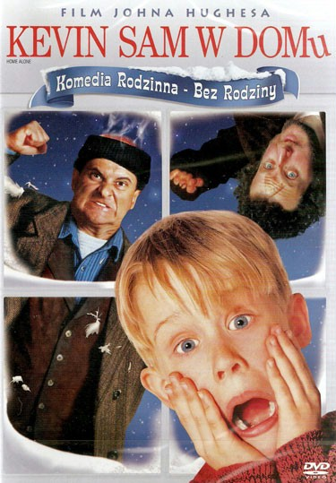

Kevin sam w domu (1990)
Fabuła
Rodzina McCallisterów na Święta Bożego Narodzenia wyjeżdża do Paryża. Z powodu porannego pośpiechu wywołanego możliwością spóźnienia się na samolot do Francji rodzina poleciała bez Kevina, który został sam w domu. Tymczasem domem chłopca zaczynają interesować się włamywacze – Harry i Marv, którym Kevin musi stawić czoła. Akcja filmu dzieje się od wieczora 21 grudnia do poranka 25 grudnia, głównie w domu McCallisterów w Chicago, ale również w innych częściach tego miasta oraz na lotniskach i w hotelu w Paryżu, na lotniskach w Dallas i Scranton oraz w ciężarówce jadącej ze Scranton do Chicago.
W pierwszy weekend film zarobił siedemnaście milionów dolarów i stał się tak popularny, że wyświetlano go w kinach jeszcze długo po okresie świątecznym. Przez dwanaście tygodni utrzymywał się na pierwszym miejscu amerykańskiego box office’u, a przez kolejnych dziesięć plasował się w pierwszej dziesiątce. Ostatecznie film na całym świecie zarobił ponad 477 000 000 dolarów, a w samych tylko Stanach przyniósł 285 000 000 dolarów zysku i stał najbardziej kasowym filmem roku w Ameryce Północnej. Znalazł się także w Księdze rekordów Guinnessa jako najbardziej dochodowa komedia wszech czasów.
Większość scen nakręcono w Chicago i jego okolicach. Pozostałe, jak np. te z Paryża to filmowe triki. I tak ujęcia na lotnisku Paryż – Orly sfilmowano w porcie lotniczym Chicago-O’Hare, a scena, w której Kevin brnie przez zalaną piwnicę, próbując przechytrzyć włamywaczy, została nagrana na basenie szkoły New Trier High School. Z kolei scenografię wnętrza samolotu, którym McCallisterowie lecą do Paryża, ulokowano na szkolnym boisku do koszykówki.